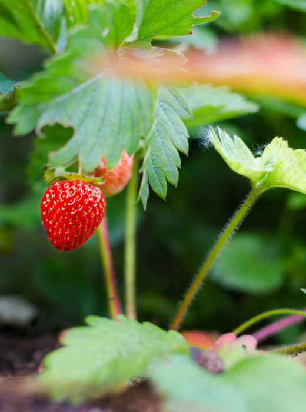
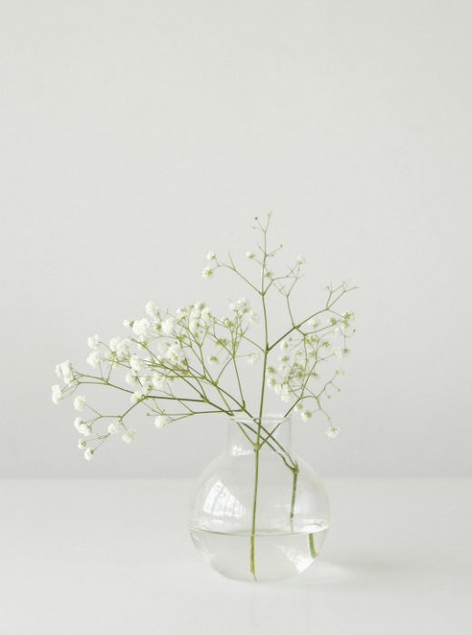

Cat safe plants for your home and garden
There are so many plants in our world and a large portion of them are wonderful to look at. Unfortunately, not all of them are safe for our furbabies to ingest or even be around in general. Here are a few commonly loved plants that are safe for you to have in your home and garden that won't hurt your cats. Bamboo, Strawberry plants, Baby's Breath, and Roses are a few plants that are safe to have around your kittens. Catnip is another plant that some label as toxic is generally considered safe for cats in moderation.

